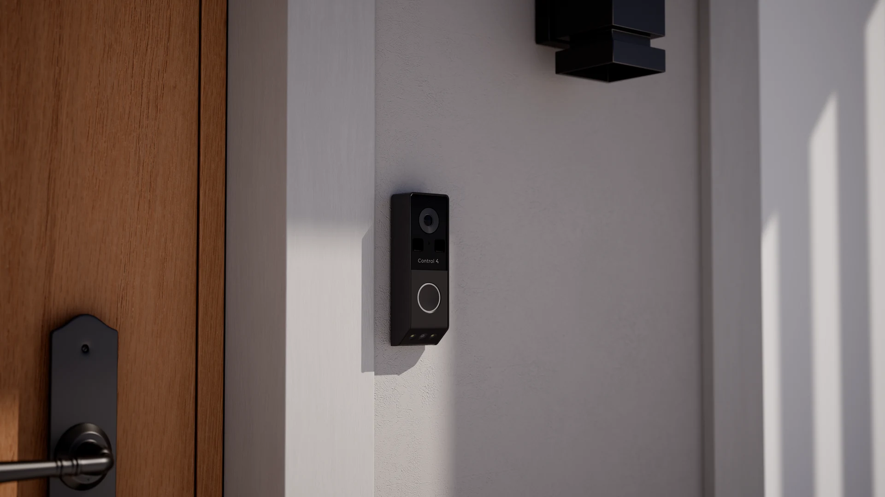
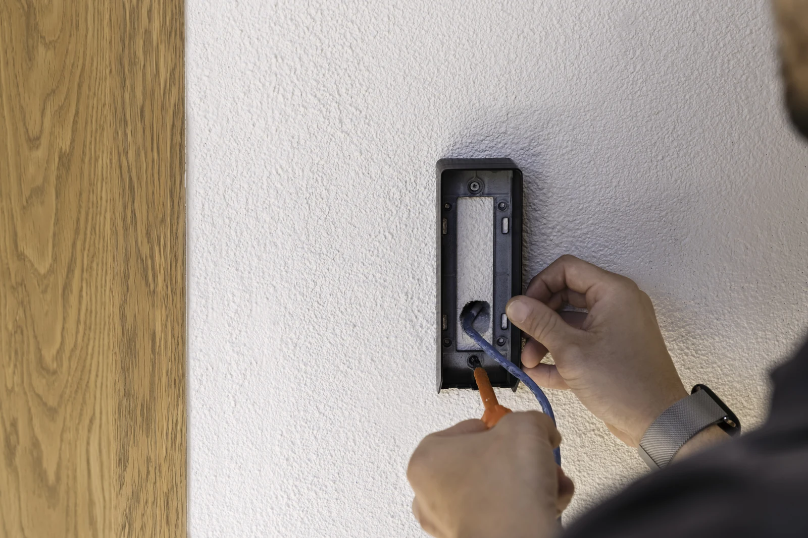
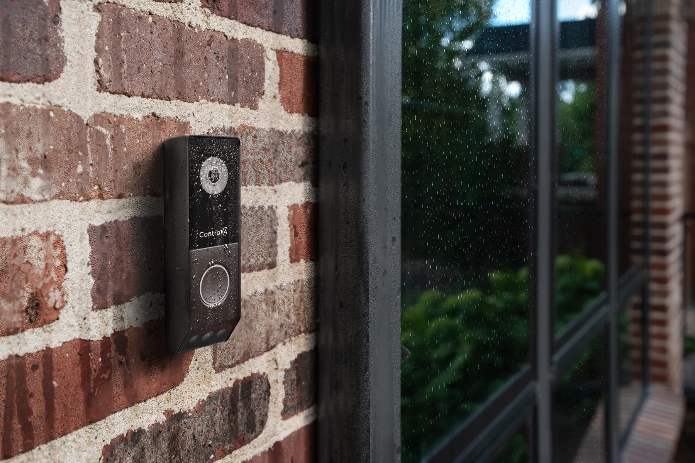
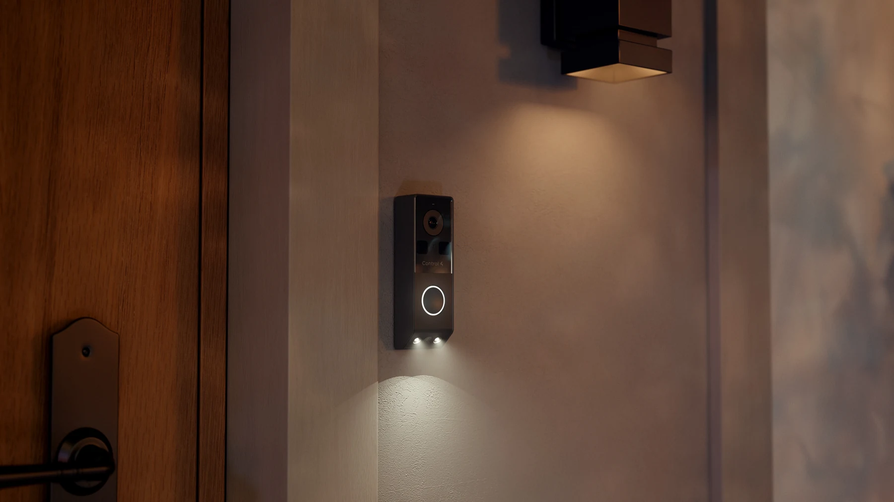
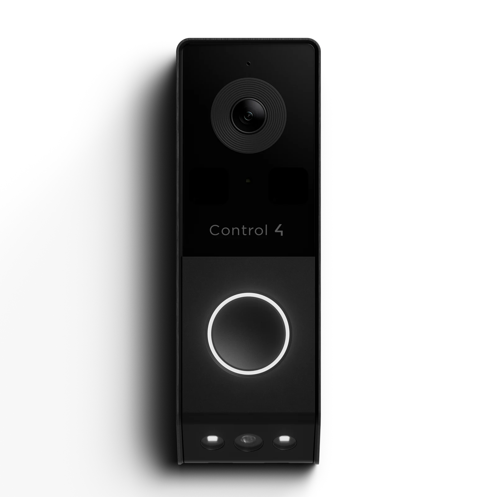
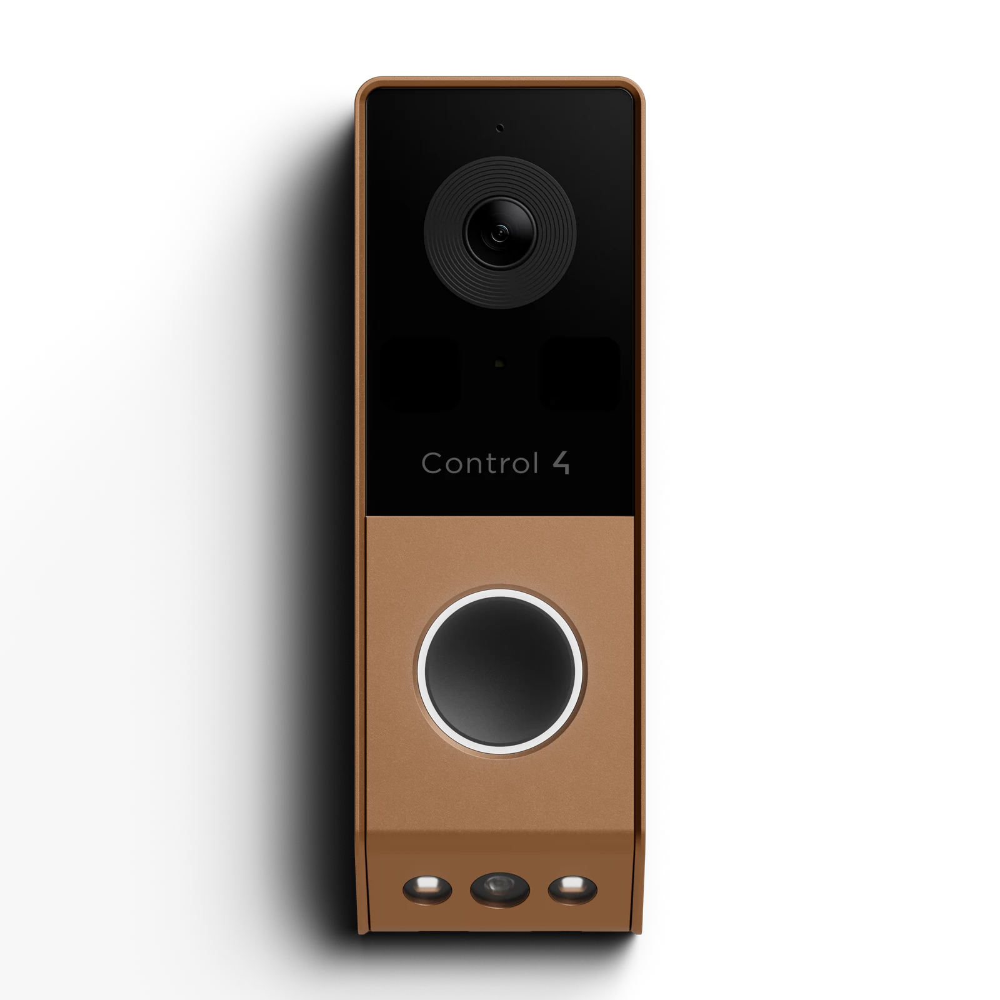

Is Chime Pro right for your door?
One camera shows who’s there. A second looks down at deliveries.
The short answer: Chime Pro needs Ethernet at the door and a compatible Control4 system running OS 4.3.0 or later. There’s no Wi-Fi model.

Jump to a section
Check your wiring before you buy
Chime Pro uses one Ethernet cable for power and data. That’s called Power over Ethernet, or PoE. Your old two doorbell wires can’t provide that connection.
Ask your installer to check
- Can Ethernet reach the front door?
- Can your Control4 system support OS 4.3.0 or later and the Chime Pro driver?
- Is there room for the mount and cable, and where should the doorbell ring?

No Ethernet route? See the original Chime PoE vs Wi-Fi guide.
What each camera sees
The main camera looks at the visitor. The lower camera points at the doorstep. Control4 offers a picture-in-picture view so you can see both together. Steps, a recessed entrance or a large box can still block part of the view.
The package camera does not use infrared night vision. If your porch is dark, test the view with the built-in entry light or your porch lights before settling on a mounting spot.
This guide uses manufacturer documentation. We haven’t independently tested image quality or reliability.
Answering the door and saving a clip
Answering a call live and saving footage for later are separate. If you want phone alerts away from home, check your Control4 Connect subscription. Before the installer leaves, try one call and play back a recent clip on the devices you’ll use.
Which alerts are worth turning on?
Start with alerts you’d act on, such as a delivery. Test a few normal arrivals before adding more. Shadows and obstructions can affect detection, and a delivery alert doesn’t tell you whether the package is still there.
Plan for rain, cold and porch lighting
The listed operating range is −4°F to 140°F and the enclosure is rated IP55. At an exposed Chicago-area entrance, ask about the coldest temperatures, where water runs and how the cable connection will be protected.


Should you replace an existing Chime?
Keep it if you can already see what matters and answer calls reliably. If calls drop, check the power and network before replacing the doorbell. If the package view is the missing piece, review the wiring, mount and any lock or gate controls before swapping an original Chime or DS2.
See Black and Antique Bronze
Compare each finish with your front-door handle and trim. Screen color can differ from the finish in person.


Technical specifications and model numbers
- Connection
- 802.3af Power over Ethernet; no Wi-Fi.
- Software
- Control4 OS 4.3.0 or later with the supported driver and Communication V2 agent.
- Video streams
- Main: up to 3840 × 2160. Package: up to 2560 × 1440, not a second 4K stream. The data sheet lists up to 20 frames per second for these streams.
- Outdoor limits
- IP55; −4°F to 140°F (−20°C to 60°C) operating range.
- Dimensions
- About 6.4 in tall × 2.12 in wide × 1.29 in deep (163 × 54 × 33 mm).
- Model numbers
- Black: C4-VDB-IP-PRO-BL. Antique Bronze: C4-VDB-IP-PRO-BZ.
A few practical questions
Can I keep my indoor chime?
Ask your installer to check the exact chime and its wiring. An existing indoor chime does not replace the Ethernet connection to Chime Pro.
Does it automatically unlock the door?
No. A compatible lock needs its own setup and permissions. A person or package alert is not permission to unlock.
What should an installation quote include?
Ask for the doorbell, cable work, power equipment, mounting, any Control4 upgrades, recording setup and subscriptions. Confirm the finish and lead time before scheduling.
Not sure what will work at your door?
If you’re in the Chicago area, tell us what doorbell you have now and whether there’s Ethernet at the entrance. We’ll help you decide what to keep and what needs to change.
Plan my front-door systemOfficial references and image credits
Reviewed October 19, 2026. This guide summarizes current manufacturer documentation; it does not claim hands-on performance testing. Model-specific instructions and confirmed project compatibility take precedence.
- Control4 / ADI Chime Pro product listing and support downloads; Chime Pro data sheet (PDF)
- Official Chime Pro installation and setup guide
- Installation prerequisites and project configuration. ADI’s current prerequisites and Composer setup both specify 4.3.0 or later. The configuration guide also explains why the package camera needs visible light after dark.
- SD recording, NVR recording and Luma Bridge limitation, and event configuration
- Product and lifestyle images: Control4 / ADI Marketing Materials, accessed through the dealer marketing library. They are manufacturer images, not photographs of Denali Tech installations. Images are proportionally downsized without cropping or retouching; product transparency is retained.